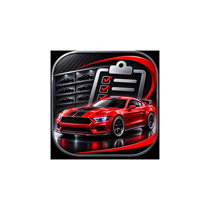

Arte de docs/icone-novo.png em drawable-nodpi/ic_launcher_foreground.png sobre @color/ic_launcher_background (#010101), recuada para 56dp da camada de 108dp.

A arte ocupa 56dp de largura da camada de 108dp, centralizada. Assim a moldura prateada fica inteira dentro da área visível de 72dp e não é cortada nem pela máscara circular.
O quadrado preto ao redor da arte se funde ao fundo sólido (#010101), então o ícone parece sangrar até a borda sem perder a moldura. A camada monocromática continua vetorial, para os ícones temáticos.